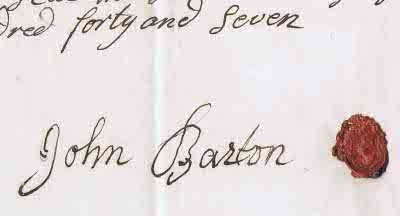
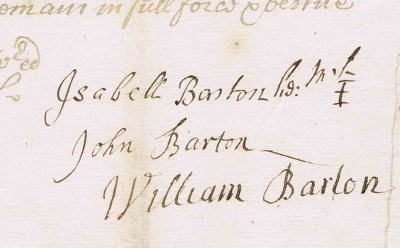
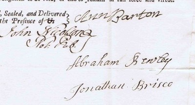

- DBHB's great x6 grandfather?
- Son of John Barton (d.1720) and Isabell?
- Lived and died in Ivegill, Cumbria.
- Married Ann (d.1748).
- Father of Bernard Barton of Carlisle (1728-1773)?
Mentions
"Thy cordial approval of my brother John's hearty wish to bring us back to the simple habits of the olden time induces me to ask thee if I mentioned in either of my late letters the curious old papers he stumbled on in hunting through the repositories of our late excellent spinster sister? I quite forget whether I did or not; so I will not at a venture repeat all the items. But he found an inventory of the goods and chattels of our great-grandfather, John Barton of Ive-Gill, a little hamlet about five or seven miles from Carlisle; by which it seems our progenitor was one of those truly patriarchal personages, a Cumbrian statesman — living on his own little estate, and drawing from it all things needful for himself and his family. I will be bound for it my good brother was more gratified at finding his earliest traceable ancestor such an one than if he had found him in the college of heralds with gules purpura and argent emblazoned as his bearings. The total amount of his stock, independent of house, land, and any money he might have, seems by the valuation to have been £61 6s., and the copy of his admission to his little estate gives the fine as £5, so that I suppose its annual value was then estimated at £2 15s. This was about a century back. Yet this man was the chief means of building the little chapel in the dale, still standing. (He was a Churchman.) I doubt not he was a fine simple-hearted noble-minded yeoman, in his day, and I am very proud of him. Why did his son, my grandfather, after whom I was named, ever leave that pleasant dale, and go and set up a manufactory in Carlisle; inventing a piece of machinery for which he had a medal from the Royal Society? — so says Pennant. Methinks he had better have abode in the old grey stone, slate-covered homestead on the banks of that pretty brooklet the Ive! but I bear his name, so I will not quarrel with his memory." *Fitzgerald 1849
Evidence that this John Barton was the father of Bernard Barton of Carlisle (1728-1773) is given here and below. However the above quote appear to be in error regarding Bernard's great-grandfather's involvement with the restoration of High Head chapel; the evidence suggests that it was more likely his great-great-grandfather, also John Barton (d.1720).
A John Barton - possibly this one - appears as both witness and tenant (twice) in the 1736 will of Isabella Miller of Highhead Castle: see *Jackson 1892.
Birth
No parish record has yet been found for John's birth. His father's will declares that John was not yet 21 on 6 February 1715 (therefore he was not born before 6 February 1694) but he is old enough to sign the probate of the will in 1720, therefore his birth year was likely between 1694 and 1702. His first child (see below) would therefore have been born when he was between 20 and 28, and his last child when he was between 35 and 43; both quite plausible ranges.
Children
The will of John's wife Ann mentions three daughters (Margaret, Jane and Mabel), eldest son Bernard and youngest son John. John and Mabel are younger than 21 in 1748, meaning they were born after 1728.
This matches baptism notices in the High Head chapel baptismal register (and certain online parish records: Indexing Project (Batch) Number I03796-7 System Origin England-EASy Source Film Number 1472080) of children born in Ivegill to a father called John, which give the following dates:
- Margaret Barton: bpt. 10 Oct 1722, Ivegill
- Jane Barton, bpt. 1 Aug 1725, Ivegill
- Barnard Barton, bpt. 23 Jun 1728, Ivegill
- Mabel Barton, bpt. 10 Sep 1732, Ivegill
- John Barton, bpt. 18 Feb 1735, Ivegill (presumably died in infancy)
- John Barton, bpt. 8 Mar 1737, Ivegill
Home
Family tradition has it that John lived at Ive Bank, Ivegill, but this is difficult to establish with certainty. He leaves all his property to his wife Ann, and the only property she mentions in her will is at Thomas Close, a few miles to the south. However it is quite possible that John's father, also John, may have owned Ive Bank (then called Parcy Close) and left it in his will to his eldest son William (this John's elder brother).
Tenant of Highhead Castle?
The 1737 will of Isabella Miller of Highhead Castle mentions two John Bartons as tenants, possibly the same man renting two holdings, paying 13 shillings and 4 pence in annual rent for one and 8 shillings and 6 pence for the other (the same annual rent on the later manorial documents below). A John Barton is also one of the witnesses to that will. All could be this John. The same document also mentions a William Barton as a tenant - possibly William Barton (1700-1763), and possibly this John's brother?
Manorial Documents
Two manorial documents, found amongst the *ABH research notes, relate to Ivegill and possibly to Ive Bank. The first is believed to describe the handing over of the property rights from this John to Bernard his son:
 .jpg")
"9 Dec. 1747
Manor of Highhed.
On the Ninth day of December in this Year of Our Lord One Thousand, Seven Hundred & Forty Seven Came Bernard Barton, upon the Death of John Barton, Father of ye sd. Bernard Barton, & took of me Susannah Richmond Lady of the said Mannor, a Messuage & Tenemt. wth. the appurtenances lying at Ivegill wth.in, & parcell of the said Manor, of the Yearly Arbitrary Customary Rent of Eight Shillings & Sixpence, & other Services, To Hold the said Messuages & Tenemt. wth. the appurtenances unto the said Bernard Barton during the Joint Lives of me the said Lady & the said Bernard Barton at the will of the Lady according to the Custom of the said Manor. Yielding & Paying therefore the sd. Yearly Rent of Eight Shillings & Sixpence at the days & times due & of right accustom'd. And doing, paying, & performing, all other Dues, Duties, Customs & Service, due for & in respect of the Same & the said Bernard Barton having compounded for & paid the Sum of Five Pounds & Nineteen Shillings as the Descent Fine, is thereupon admitted Tenant by me,
Sus. Richmond.
Rent
L S D
0:8:6
Admittance
0:2:6
Enrolling
0-1-0
Fine
£5-19-0
A Godspenny"
The text of a second document, repeating the process for Bernard's son, John Barton the Elder (1754-1789) is reproduced on Bernard's page.
Burial
The *Dalston parish records include this entry (v2 p255):
"1747 Novemb 20 John Barton of Hivegill buried"
Will
John Barton's will is available from the *Cumbria archive service:
"In the name of God Amen I John Barton of Hive-gill in the Parish of Dalston and county of Cumberland yeoman being a little weak and infirm of Body but of Sound and perfect mind and memory (Praised be Almighty God) do make and ordain this my last will and Testament in form and manner following that is to say First and principally I commend my soul into the Hands of Almighty God hopeing through the Merits Death and Passion of my Saviour Jesus Christ to have full and free pardon and forgiveness of all my sins and to inherit Everlasting Life. And my Body I commit to the Earth to be decently buried at the discretion of my executrix hearafter named and as touching the disposal of all such temporal estate as it hath pleased Almighty God to bestow upon me I give and and Bequeth unto my well beloved wife - Ann Barton all my goods and Chattels whatsoever that is to say household goods and implements of husbandery and all the rest and Residue of my Personal Estate. I give and Bequeth to the aforesaid Ann Barton my beloved wife whome I make my sole executrix of this my Last will and testament.
And I Do hereby revoke disanul and make void all former Wills and Testaments by me heretofore - made, in witness whereof I have hereunto set my Hand and Seal the Sixteenth day of november in the year of our Lord one thousand seven hundred forty and seven.
Signed Sealed published and Declared by the abovesaid John Barton for his Last will and Testament in the presence of us
Mark Warwick[?]
Joseph Mouncster[?] his mark x
[signed and sealed by] John Barton"

(Extract from a scan provided by the *Cumbria archive service)
(In my view [DBHB], taking into account his frailty when signing his will, the signature above matches that of the son of John Barton (d.1720) in the probate of the latter's will; extract from a scan provided by the *Cumbria archive service):

The probate of the will was signed by Ann (d.1748), John Nicolson, Abraham Bewley and Jonathan Brisco:

(Extract from a scan provided by the *Cumbria archive service)